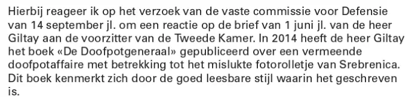
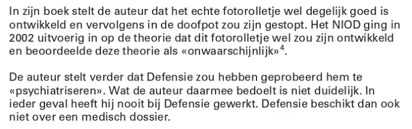

Prueba · Carta
Carta del ministro de Defensa, Dijkhoff, a la presidenta de la Cámara, Arib, 13 de octubre de 2017
La sección de voces cita tres elementos de esta carta: la valoración del estilo del libro, la crítica a la tesis del rollo de película y la crítica a la palabra «psiquiatrizar». Los pasajes figuran a continuación en el orden de la carta.
Sobre el estilo del libro
«En 2014, el señor Giltay publicó el libro “De Doofpotgeneraal” sobre un presunto caso de encubrimiento relacionado con el rollo de película fallido de Srebrenica. Este libro se caracteriza por el estilo de fácil lectura en que está escrito». Página 3, el final del primer párrafo de la carta ministerial. Las líneas se han unido aquí. La carta escribe el título del libro «De Doofpotgeneraal», con mayúscula en ambas palabras, mientras que el libro mismo se titula De doofpotgeneraal. Traducido del neerlandés; el texto original figura a continuación. De doofpotgeneraal es el título original neerlandés del libro El general del encubrimiento.
“In 2014 heeft de heer Giltay het boek «De Doofpotgeneraal» gepubliceerd over een vermeende doofpotaffaire met betrekking tot het mislukte fotorolletje van Srebrenica. Dit boek kenmerkt zich door de goed leesbare stijl waarin het geschreven is.” Texto original

Sobre el rollo de película y la psiquiatrización
«En su libro, el autor sostiene que el verdadero rollo de película sí se reveló correctamente y que después se habría ocultado. En 2002, el NIOD examinó con detenimiento la teoría de que este rollo de película sí se habría revelado y calificó esta teoría de “improbable”. El autor sostiene además que Defensa habría intentado “psiquiatrizarlo”. No está claro qué quiere decir el autor con ello. En cualquier caso, nunca ha trabajado en Defensa. Por consiguiente, Defensa no dispone de un expediente médico». Página 3, los párrafos cuarto y quinto de la carta ministerial. Las líneas se han unido aquí. Se omite la llamada de nota 4, que sigue a «onwaarschijnlijk» (improbable) y remite a las páginas 3027–3028 del informe del NIOD. Traducido del neerlandés; el texto original figura a continuación.
“In zijn boek stelt de auteur dat het echte fotorolletje wel degelijk goed is ontwikkeld en vervolgens in de doofpot zou zijn gestopt. Het NIOD ging in 2002 uitvoerig in op de theorie dat dit fotorolletje wel zou zijn ontwikkeld en beoordeelde deze theorie als «onwaarschijnlijk». De auteur stelt verder dat Defensie zou hebben geprobeerd hem te «psychiatriseren». Wat de auteur daarmee bedoelt is niet duidelijk. In ieder geval heeft hij nooit bij Defensie gewerkt. Defensie beschikt dan ook niet over een medisch dossier.” Texto original

Por qué importa este documento
En su carta del 1 de junio de 2017, página 1 de este PDF, Giltay señaló a la Cámara de Representantes (Tweede Kamer) que el Tribunal de Apelación de La Haya había resuelto que el rigor del libro no estaba en entredicho. El 14 de septiembre de 2017, la Comisión Permanente de Defensa pidió a la ministra de Defensa que se pronunciara. En su respuesta, el ministro interino de Defensa, Klaas Dijkhoff, elogió el estilo de fácil lectura del libro y a continuación abordó algunas de sus afirmaciones.
Sostuvo que las imágenes se habían borrado involuntariamente al revelarse en un laboratorio fotográfico de Defensa e informó de que el NIOD había calificado de «improbable» la teoría de un rollo de película revelado. No dijo una sola palabra sobre el examen de los expertos de Agfa en Múnich, que, según el diario Trouw, concluyeron en 2001 que el rollo de película había sido destruido tan a fondo que solo un acto intencionado podía explicarlo. Además, escribió que no está claro qué entiende el autor por «psiquiatrizar» y que Giltay nunca trabajó en Defensa, de modo que el ministerio no tiene ningún expediente médico suyo. El ensayo sostiene que la carta eludió por completo el asunto de inteligencia militar; en ninguna parte de la carta se menciona un servicio de inteligencia.
Procedencia
- Documento
- Carta del Gobierno a la Cámara (página 3 de este PDF)
- Remitente
- El ministro de Defensa, K.H.D.M. Dijkhoff
- Destinataria
- La presidenta de la Cámara de Representantes de los Estados Generales, Khadija Arib
- Fecha
- 13 de octubre de 2017
- Referencia
- 2017D29046
- Asunto
- Respuesta a la carta del 1 de junio de 2017 del señor Giltay a la presidenta de la Cámara de Representantes
- Referencias
- La solicitud de la Comisión Permanente de Defensa del 14 de septiembre de 2017; el informe del NIOD Srebrenica, een ‘veilig’ gebied (Srebrenica, una zona «segura»), 10 de abril de 2002, pp. 3009–3028 y 3027–3028; el informe de la Comisión Parlamentaria de Investigación sobre Srebrenica, Missie zonder vrede (Misión sin paz), documento parlamentario 28 506, núms. 2 y 3, pp. 272–281, 273 y 458–459
- Idioma
- Neerlandés
- Publicado en
- Publicación oficial como «niet-dossierstuk» (documento no adscrito a un expediente) 2017D29046 de la Cámara de Representantes, zoek.
officielebekendmakingen. nl/ nds-tk-2017D29046.pdf - Páginas
- 3 en este PDF, de las cuales esta es la tercera. La página 1 es la carta de Giltay del 1 de junio de 2017, dirigida a drs. Mark Rutte en la Cámara de Representantes, asunto «Srebrenica-doofpotaffaire» (caso de encubrimiento en torno a Srebrenica). La página 2 es la respuesta de la Comisión Permanente de Defensa del 18 de septiembre de 2017, referencia 2017Z09359/2017D25719, en la que se comunica que la comisión había decidido pedir a la ministra de Defensa que se pronunciara
- Véase también
- Trouw sobre el examen técnico del rollo de película, probablemente del 20 de junio de 2001Tribunal de Apelación de La Haya, sentencia del 12 de abril de 2016 (ECLI:NL:GHDHA:2016:870)Comisión Permanente de Defensa a Giltay, 18 de septiembre de 2017
Citado en:
- el ensayo «La prohibición cayó, el libro quedó en pie» en los capítulos (7) «Ninguna respuesta sobre el fondo» y (11) «Poner fin al silencio sobre Srebrenica» y en la diapositiva «Cámara de Representantes · 2017» de la presentación «La historia en el mapa»
- la sección de voces bajo el epígrafe «Posiciones oficiales»
- la biografía del autor.
Documento: https://
Modificado por última vez el 13 de septiembre de 2026, consultado el 27 de noviembre de 2026.

Esta página es una ficha de prueba del libro El general del encubrimiento de Edwin Giltay y del sitio web que lo acompaña.